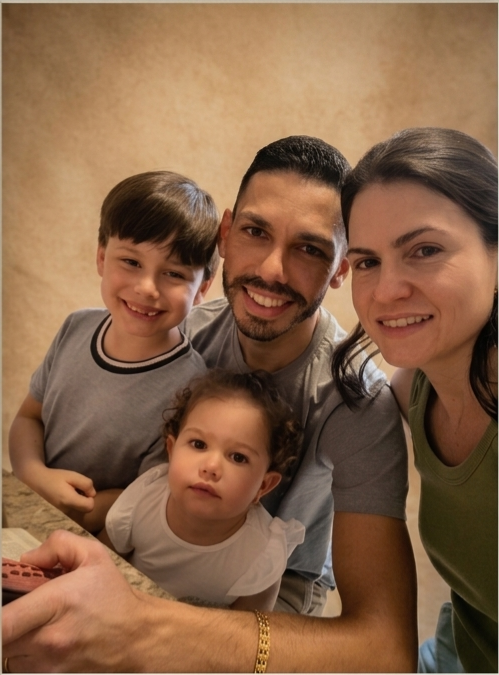

Quem Criou o Jogo? 👨👩👧👦

Eder, Josiane, Enrico e Clara! ❤️
"Se eu tivesse que me definir em poucas palavras, diria que sou um entusiasta do planejamento, um apaixonado por resolver problemas e, acima de tudo, um homem de família!"
Olá, amiguinhos! Meu nome é Eder Fernandes! 👋
No meu dia a dia de trabalho, sou Administrador e há mais de 20 anos ajudo a loja da minha família no atendimento de seus clientes, marketing, organização de suas contas, estoques e estratégias. Para mim, administrar é como resolver um grande e divertido quebra-cabeça todos os dias!
Tenho fé em Deus como Senhor da minha vida e o meu trabalho favorito no mundo é cuidar da minha família: sou o marido da Josiane e papai orgulhoso do Enrico e da Clara. É junto deles que renovo minhas energias para criar coisas incríveis!
Como Nasceu a Ideia do Jogo? 💡
A grande inspiração para este projeto foi meu filho Enrico, de 7 anos! Ele é um garoto super curioso, inteligente e que ama ler, desenhar, ir para a escola e brincar com seus amigos.
Olhando para ele, pensei: "Por que não criar um jogo divertido e desafiador, onde as crianças aprendam brincando?"
Neste jogo, a missão vai além de somar pontos: o objetivo é mostrar que cair faz parte, mas levantar e tentar de novo com foco, treino e persistência faz de qualquer criança um verdadeiro campeão!
Desejo que você e sua família se divirtam muito nessa aventura ninja! ⭐